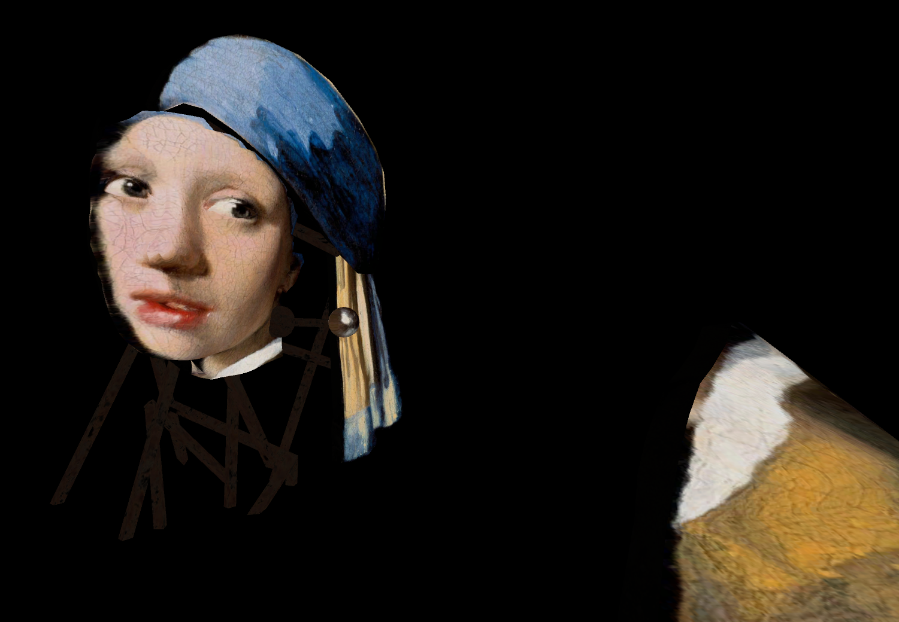

Liminal Museum
Nom: Liminal Museum
Genre: Infiltration
Plateforme: Unity
Joueur: 1

Pitch
Sur PC, incarnez un voleur et infiltrez-vous dans un musée d'art en vous déplaçant à l'aide de votre webcam ou du clavier et volez un élément des tableaux en entrant dans chacun d'entre eux pour découvrir l'échafaudage constituant les plans des tableaux.
Contexte
Liminal Museum est un projet qui a vu le jour durant la jam des maisons de Ludus Academie déroulé sur 1 mois, le thème était "sortir du cadre". Nous avons donc tourné la gameplay autour de peinture célèbre et nous sommes inspirés du jeu "Superliminal" pour l'aspect de la perspective et permettre aux joueurs de découvrir ces peintures sous un autre angle.
Intention
- Comprendre la création de jeu avec des scripts.
- Réaliser un travail collaboratif sur Unity.
- Gérer mon temps entre le projet et les cours.
- Découvrir de nouvelle mécanique (utilisation de la caméra).